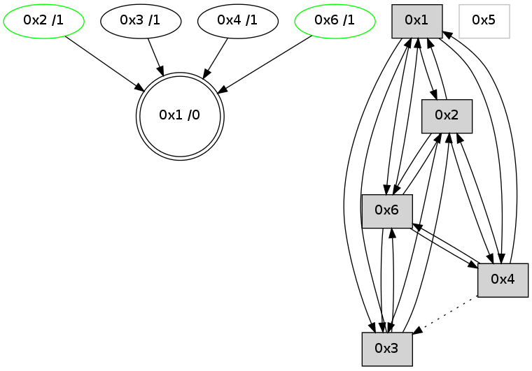

>> << IDX [start] -100 -25 -5 +0 +5 +25 +100 [735.359241962]
 Previous packets
730.007684 [Hello(2): seq=1023 sym=4,6,1,3 sysInfo= stat=4:2,0,2,0/6:14,0,4,3/1:8,0,11,0/3:3,0,1,1]
730.011609 [STC(1) #0.37 to-color d=0]
----------------------------------------------------------------------
730.438157 beacon01(adaf) #0 coord=01,02,05,03,04,06 cycle=432.0ms assoc
-- color-indic=0 64 d0 b7
730.448119 beacon02(adaf) #0 coord=01,02,05,03,04,06 cycle=432.0ms assoc 64 81 48
730.458118 beacon05(adaf) #0 coord=01,02,05,03,04,06 cycle=432.0ms assoc 64 27 62
730.468118 beacon03(adaf) #0 coord=01,02,05,03,04,06 cycle=432.0ms assoc 64 bb 46
730.478120 beacon04(adaf) #0 coord=01,02,05,03,04,06 cycle=432.0ms assoc 64 1d 6c
730.488119 beacon06(adaf) #0 coord=01,02,05,03,04,06 cycle=432.0ms assoc 64 69 70
730.499904 [STC(2)->1 #0.37 stable,to-color d=1]
730.501757 [Hello(1): seq=432 sym=2,3,6 sysInfo= stat=2:2,0,7,8/3:0,0,1,0/6:5,0,4,5]
730.503696 [Hello(4): seq=533 sym=3,6,1,2 sysInfo= stat=3:1,0,1,1/6:0,0,2,2/1:2,0,15,0/2:1,0,2,3]
730.505632 [Hello(6): seq=447 sym=3,2,1 sysInfo=hasWarning stat=3:2,0,0,0/2:15,0,0,2/1:9,0,15,0]
730.507361 [STC(3)->1 #0.37 to-color d=1]
730.508666 [STC(6)->1 #0.37 stable,to-color d=1]
730.510956 [TreeStatus(6)-.->1 #0.37 stable child=1]
730.513777 [TreeStatus(2)-.->1 #0.37 stable child=1]
730.517007 [STC(4)->1 #0.37 to-color d=1]
----------------------------------------------------------------------
730.930265 beacon01(adaf) #0 coord=01,02,05,03,04,06 cycle=432.0ms assoc
-- color-indic=0 64 14 d8
730.940225 beacon02(adaf) #0 coord=01,02,05,03,04,06 cycle=432.0ms assoc 64 45 27
730.950227 beacon05(adaf) #0 coord=01,02,05,03,04,06 cycle=432.0ms assoc 64 e3 0d
730.960226 beacon03(adaf) #0 coord=01,02,05,03,04,06 cycle=432.0ms assoc 64 7f 29
730.970226 beacon04(adaf) #0 coord=01,02,05,03,04,06 cycle=432.0ms assoc 64 d9 03
730.980227 beacon06(adaf) #0 coord=01,02,05,03,04,06 cycle=432.0ms assoc 64 ad 1f
730.991921 [Hello(2): seq=1024 sym=4,6,1,3 sysInfo= stat=4:2,0,3,0/6:14,0,4,3/1:8,0,12,0/3:3,0,1,1]
----------------------------------------------------------------------
731.422372 beacon01(adaf) #0 coord=01,02,05,03,04,06 cycle=432.0ms assoc
-- color-indic=0 64 58 68
731.432333 beacon02(adaf) #0 coord=01,02,05,03,04,06 cycle=432.0ms assoc 64 09 97
731.442333 beacon05(adaf) #0 coord=01,02,05,03,04,06 cycle=432.0ms assoc 64 af bd
731.452334 beacon03(adaf) #0 coord=01,02,05,03,04,06 cycle=432.0ms assoc 64 33 99
731.462334 beacon04(adaf) #0 coord=01,02,05,03,04,06 cycle=432.0ms assoc 64 95 b3
731.472334 beacon06(adaf) #0 coord=01,02,05,03,04,06 cycle=432.0ms assoc 64 e1 af
731.484013 [Hello(3): seq=532 sym=2,1,6 sysInfo=hasWarning stat=2:1,0,1,3/1:3,0,11,0/6:0,0,3,3]
731.487761 [Hello(4): seq=534 sym=6,1,2 asym=3 sysInfo= stat=6:0,0,2,2/1:2,0,15,0/2:2,0,2,3/3:1,0,1,1]
731.491412 [Hello(1): seq=433 sym=2,3,4,6 sysInfo= stat=2:3,0,7,9/3:0,0,2,0/4:0,0,1,0/6:6,0,5,6]
----------------------------------------------------------------------
731.914482 beacon01(adaf) #0 coord=01,02,05,03,04,06 cycle=432.0ms assoc
-- color-indic=0 64 9c 07
731.924444 beacon02(adaf) #0 coord=01,02,05,03,04,06 cycle=432.0ms assoc 64 cd f8
731.934443 beacon05(adaf) #0 coord=01,02,05,03,04,06 cycle=432.0ms assoc 64 6b d2
731.944444 beacon03(adaf) #0 coord=01,02,05,03,04,06 cycle=432.0ms assoc 64 f7 f6
731.954443 beacon04(adaf) #0 coord=01,02,05,03,04,06 cycle=432.0ms assoc 64 51 dc
731.964444 beacon06(adaf) #0 coord=01,02,05,03,04,06 cycle=432.0ms assoc 64 25 c0
731.976120 [Hello(2): seq=1025 sym=4,6,1,3 sysInfo= stat=4:3,0,3,0/6:15,0,4,3/1:9,0,12,0/3:3,0,1,1]
----------------------------------------------------------------------
732.406590 beacon01(adaf) #0 coord=01,02,05,03,04,06 cycle=432.0ms assoc
-- color-indic=0 64 d1 00
732.416550 beacon02(adaf) #0 coord=01,02,05,03,04,06 cycle=432.0ms assoc 64 80 ff
732.426550 beacon05(adaf) #0 coord=01,02,05,03,04,06 cycle=432.0ms assoc 64 26 d5
732.436552 beacon03(adaf) #0 coord=01,02,05,03,04,06 cycle=432.0ms assoc 64 ba f1
732.446551 beacon04(adaf) #0 coord=01,02,05,03,04,06 cycle=432.0ms assoc 64 1c db
732.467619 [Hello(1): seq=434 sym=2,3,4,6 sysInfo= stat=2:4,0,7,9/3:0,0,2,0/4:0,0,1,0/6:6,0,5,6]
732.471734 [STC(1) #0.38 to-color d=0]
732.473700 [Hello(4): seq=535 sym=1,2 asym=3 sysInfo= stat=1:3,0,15,0/2:3,0,2,3/3:1,0,1,1]
----------------------------------------------------------------------
732.898697 beacon01(adaf) #0 coord=01,02,05,03,04,06 cycle=432.0ms assoc
-- color-indic=0 64 15 6f
732.908658 beacon02(adaf) #0 coord=01,02,05,03,04,06 cycle=432.0ms assoc 64 44 90
732.918658 beacon05(adaf) #0 coord=01,02,05,03,04,06 cycle=432.0ms assoc 64 e2 ba
732.928659 beacon03(adaf) #0 coord=01,02,05,03,04,06 cycle=432.0ms assoc 64 7e 9e
732.938658 beacon04(adaf) #0 coord=01,02,05,03,04,06 cycle=432.0ms assoc 64 d8 b4
732.948659 beacon06(adaf) #0 coord=01,02,05,03,04,06 cycle=432.0ms assoc 64 ac a8
732.960811 [Hello(6): seq=449 sym=3,2,1,4 sysInfo=hasWarning stat=3:3,0,0,0/2:1,0,0,3/1:11,0,0,0/4:0,0,0,0]
732.963944 [STC(6)->1 #0.38 stable,to-color d=1]
732.966299 [Hello(2): seq=1026 sym=4,6,1,3 sysInfo= stat=4:3,0,3,0/6:15,0,4,3/1:10,0,13,0/3:3,0,1,1]
732.969426 [STC(2)->1 #0.38 stable,to-color d=1]
732.970848 [TreeStatus(6)-.->1 #0.38 stable child=1]
732.975049 [TreeStatus(2)-.->1 #0.38 stable child=1]
----------------------------------------------------------------------
733.390806 beacon01(adaf) #0 coord=01,02,05,03,04,06 cycle=432.0ms assoc
-- color-indic=0 64 59 df
733.400769 beacon02(adaf) #0 coord=01,02,05,03,04,06 cycle=432.0ms assoc 64 08 20
733.410766 beacon05(adaf) #0 coord=01,02,05,03,04,06 cycle=432.0ms assoc 64 ae 0a
733.420767 beacon03(adaf) #0 coord=01,02,05,03,04,06 cycle=432.0ms assoc 64 32 2e
733.430768 beacon04(adaf) #0 coord=01,02,05,03,04,06 cycle=432.0ms assoc 64 94 04
733.440768 beacon06(adaf) #0 coord=01,02,05,03,04,06 cycle=432.0ms assoc 64 e0 18
733.451913 [Hello(1): seq=435 sym=2,3,4,6 sysInfo= stat=2:5,0,8,10/3:0,0,2,0/4:0,0,1,0/6:7,0,6,7]
733.456147 [Hello(4): seq=536 sym=6,1,2 asym=3 sysInfo= stat=6:0,0,1,1/1:3,0,15,0/2:4,0,3,4/3:1,0,1,1]
----------------------------------------------------------------------
733.882914 beacon01(adaf) #0 coord=01,02,05,03,04,06 cycle=432.0ms assoc
-- color-indic=0 64 9d b0
733.892874 beacon02(adaf) #0 coord=01,02,05,03,04,06 cycle=432.0ms assoc 64 cc 4f
733.902875 beacon05(adaf) #0 coord=01,02,05,03,04,06 cycle=432.0ms assoc 64 6a 65
733.912875 beacon03(adaf) #0 coord=01,02,05,03,04,06 cycle=432.0ms assoc 64 f6 41
733.922875 beacon04(adaf) #0 coord=01,02,05,03,04,06 cycle=432.0ms assoc 64 50 6b
733.932877 beacon06(adaf) #0 coord=01,02,05,03,04,06 cycle=432.0ms assoc 64 24 77
733.944564 [Hello(2): seq=1027 sym=4,6,1,3 sysInfo= stat=4:3,0,3,0/6:15,0,4,3/1:11,0,13,0/3:3,0,1,1]
----------------------------------------------------------------------
734.375023 beacon01(adaf) #0 coord=01,02,05,03,04,06 cycle=432.0ms assoc
-- color-indic=0 64 e5 1d
734.384984 beacon02(adaf) #0 coord=01,02,05,03,04,06 cycle=432.0ms assoc 64 b4 e2
734.394984 beacon05(adaf) #0 coord=01,02,05,03,04,06 cycle=432.0ms assoc 64 12 c8
734.404984 beacon03(adaf) #0 coord=01,02,05,03,04,06 cycle=432.0ms assoc 64 8e ec
734.414986 beacon04(adaf) #0 coord=01,02,05,03,04,06 cycle=432.0ms assoc 64 28 c6
734.424985 beacon06(adaf) #0 coord=01,02,05,03,04,06 cycle=432.0ms assoc 64 5c da
734.436711 [Hello(4): seq=537 sym=6,1,2 asym=3 sysInfo= stat=6:0,0,1,1/1:3,0,15,0/2:5,0,3,4/3:1,0,1,1]
734.440728 [Hello(1): seq=436 sym=2,3,4,6 sysInfo= stat=2:6,0,8,10/3:0,0,2,0/4:1,0,1,0/6:7,0,6,7]
----------------------------------------------------------------------
734.867135 beacon01(adaf) #0 coord=01,02,05,03,04,06 cycle=432.0ms assoc
-- color-indic=0 64 21 72
734.877095 beacon02(adaf) #0 coord=01,02,05,03,04,06 cycle=432.0ms assoc 64 70 8d
734.887095 beacon05(adaf) #0 coord=01,02,05,03,04,06 cycle=432.0ms assoc 64 d6 a7
734.897096 beacon03(adaf) #0 coord=01,02,05,03,04,06 cycle=432.0ms assoc 64 4a 83
734.907098 beacon04(adaf) #0 coord=01,02,05,03,04,06 cycle=432.0ms assoc 64 ec a9
734.917097 beacon06(adaf) #0 coord=01,02,05,03,04,06 cycle=432.0ms assoc 64 98 b5
734.928805 [Hello(2): seq=1028 sym=4,6,1,3 sysInfo= stat=4:3,0,3,0/6:15,0,4,3/1:12,0,13,0/3:4,0,1,1]
734.932359 [STC(1) #0.39 to-color d=0]